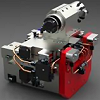

|
|
| Rapor - Makale
> Son eklenenler: |
KediCAD’de FEA uygulamasý:
Abdurrahman Ulusoy, Ulusoy Mekatronik, Kasým 2012, Ýstanbul
KediCAD, 2 boyutlu sonlu eleman analizi de yapabilmektedir. Çizim alanýna çizilen kapalý bir çizim için gereken kalýnlýk, malzeme, analiz yöntemi vb. bilgileri alarak Z88 yazýlýmý temelinde çözümlemektedir... |
 |
EUNCAP whiplash (travma) testlerine uygun, düþük maliyetli koltuk iskeleti ve baþlýk geliþtirilmesi:
Murat Dal, Aralýk 2012, MARTUR Automotive Seating Systems
Whiplash simülasyonlarý, diðer çarpýþma simülasyonlarýna göre daha uzmanlýk isteyen ve altyapýsý (FE mankeni ve donaným) daha kapasiteli olmasý gereken simülasyonlardýr. FE modelindeki en küçük ayrýntýlar bile sonuçlar üzerinde etkili olmaktadýr... |
 |
Hacim kalýp tasarýmý ve uygulama (bitirme tezi):
Fatih Altunbaþ, Fatih Alkan, Mustafa Ay, Marmara Üniv. TEF Makine Eð. Böl., Ýstanbul 2011
Bu tez çalýþmamýzda Enjeksiyon kalýplarýný etraflýca ele aldýk. Kalýp elemanlarýný tanýdýk. Kalýp tasarým ilkelerini anlatmaya çalýþtýk ve kalýp üretimi gerçekleþtirdik... |
|
Kalýp içi kumaþ kaplama:
Ýlyaz Ýdrizoðlu, Makine Yük. Müh., 2011, Bursa
"Tek iþlem", kumaþ kaplama iþlemindeki yeni telaffuz edilen kelimedir. Amacý, enjeksiyon kalýplama makinelerindeki gerçek tek sefer iþleminde kaplamasý yapýlmýþ ve kalýplanmýþ parçalar üretmektir... |
 |
Toplu taþýma otobüsü dýþ ayna kollarýnýn titreþim performansýnýn geliþtirilmesi:
Nur Hoþver, Veysel Çataltepe, Akýn Çevik, Özgür Uyar, Aralýk 2011, Kocaeli
Bu çalýþmada, Anadolu ISUZU tarafýndan geliþtirilen bir toplu taþýma otobüsünün dýþ aynalarýnýn titreþim performansýnýn, sonlu elemanlar analizleri ve titreþim testleri yardýmýyla geliþtirilmesi amaçlanmýþtýr... |
 |
Sýcak yolluk sistemlerinde meme ucu (nozul) seçimi:
Hüseyin Ayar, Gazi Üniv. TEF, Kalýpçýlýk Öðretmenliði, Ocak 2012, Ankara
Bu çalýþma, kýsaca, sýcak yolluk sistemlerinin tanýtýmý, aðýrlýklý olarak ise meme ucu seçimi ve bu seçimi etkileyen faktörler hakkýndadýr... |
 |
Türkiye’de Ar-Ge ve inovasyon faaliyetlerinde son durum:
Hasan Acül, Yeni Ürün Geliþtirme Uzmaný, Ocak 2012, Ýstanbul
Ülkemizin Ar-Ge alanýnda Dünya genelindeki durumunu gösteren bilgileri, sektörümüzde faaliyet gösteren meslektaþlarýmla paylaþmak için, birebir derledim... |
 |
Rekabette bir adým daha önde olmak için; Yeni ürün geliþtirme süreç yönetimi:
Hasan Acül, Yeni Ürün Geliþtirme Uzmaný, Ekim 2011
Günümüzde araþtýrma ve ürün geliþtirme çalýþmalarýnýn neden yapýlmasý gerekliliði konusu artýk güncelliðini yitirmiþ ve çalýþmalarýn nasýl daha verimli yapýlabileceði konusuna, yani süreç yönetimine odaklanmýþtýr... |
|
Yerli otomobil bir hayal mi?..
Saffet Çakmak, Makine Müh., Cadem A.Þ., Mayýs 2011, Ýstanbul
Evet, yerli otomobil bir hayal hem de çok güzel bir hayaldir… Her buluþ ve insanlýða faydalý olan, ilerleten her geliþme üstün insanlarýn hayalleri ile baþlar... |
 |
Plastik enjeksiyon kalýp tasarýmýnda analiz yazýlýmlarýnýn yeri:
Ýlyaz Ýdrizoglu, Makine Yüksek Mühendisi, Þubat 2010, Bursa
Bu çalýþmada, "Moldflow" analiz yazýlýmý ile seçilen bir plastik parçaya hangi analizlerin yapýlabileceðini ve elde edilen sonuçlarýn neler olduðunu açýklamak hedeflenmiþtir... |
|
Bilgisayar destekli mühendislik (CAE) analizleri ile iyi tasarým ve üretim:
Ali Cantaþ, MESH Mühendislik ve Yazýlým A.Þ., Aralýk 2010, Ýstanbul
Mühendislik analizleri kullanarak ürünleri daha kolay imal edilen, daha uzun ömürlü, daha az arýza yapan, arýzalarý daha kýsa sürede giderilen, daha düþük maliyetli, daha ergonomik ve kolay kullanýlan, daha çevreci ve yalýn hale getirmek mümkündür... |
 |
Simülasyon uygulamlarý için uygun donaným seçimi:
Eyüp Öztürk, Egemen Bilgisayar Ltd. Þti., Aralýk 2010, Ýstanbul
Eðer tasarýmcý iseniz, her programýn her bilgisayarda çalýþmayacaðýný bilmeli, programlarý layýðý ile kullanmak için farklý özellikler gerektiðini hatýrlamalý ve hatýrlatmalýsýnýz... |
 |
Kalýp Yapým Sanatý, Otomotiv Sac-Metal Kalýpçýlýðý:
Erkan Aybaraz, GÜKÖMED, Bursa, Mayýs 2010
Otomotiv Sac-Metal Kalýpçýlýðý konusunda geçmiþten bu güne çalýþmakta olan firma sahipleriyle, ana sanayi ve yan sanayi temsilcileri ile yapýlan çekimlerden oluþan, yarým saatlik belgesel video... |
 |
Patent ve faydalý modelde neden hala istediðimiz yerde deðiliz?
Semih Bektaþ, Makine Müh. (Patent Uzmaný) Adres Patent A.Þ., Nisan 2010, Ýstanbul
WIPO, 2009 raporunda Çin, Güney Kore, Brezilya'nýn yanýnda, Türkiye'yi de geliþmekte olan ülkelerin arasýnda göstermiþ, fakat raporu detaylý incelediðimizde, ülkemizin patent ve faydalý model olarak pek fazla üretken olmadýðýný anlýyoruz... |
|
CAD kullanýcýlarý için, 3D farelerin ekonomik geri ödemesi:
Taner Deniz, 3Dconnexion - A Logitech Company, Ocak 2010, Polonya
CAD tasarým mühendislerinin %84'ten fazlasý, 3D mouse kullanýmýnýn sonucu olarak, ürün tasarýmlarýnda ya da tasarýmdaki hata tespitlerinde önemli ya da belirgin bir geliþme rapor etti. 3D mouse kullanan CAD kullanýcýlarýnýn rapor ettiði ortalama verimlilik artýþý %21... |
|
Koordinat ölçüm cihazlarýna (CMM) yapýlan retrofit (modernizasyon) uygulamalarý:
Ýlker Teke, AAT Otomasyon Yazýlým Ltd. Þti., Ekim 2009, Ýstanbul
Geliþen teknolojiyle birlikte gerek elektronik kontrol sistemlerinin maliyetinin düþmesi, gerek yazýlýmlarýn sürekli geliþtirilmesi, "kamera ve lazer kafa" gibi donanýmlarýn maliyetinin düþmesi, CMM modernizasyonunu kolaylaþtýrmaktadýr... |
 |
Taþýt kavramasý kapaðýnda pedal kuvveti altýnda oluþan elastik þekil deðiþiminin sonlu elemanlar yöntemiyle belirlenmesi:
M. Murat Topaç, N. Sefa Kuralay, Yetkin Hamuriþçi, Dokuz Eylül Üniv., Ýzmir
Bu çalýþmada, tasarým aþamasýndaki bir kamyon kavramasýnda kullanýlmasý düþünülen kavrama kapaðýnýn yapýsal analizi gerçekleþtirilmiþ, öngörülen azami elastik þekil deðiþimi kriteri göz önünde bulundurularak, kavrama kapaðýnýn fonksiyona uygunluðu deðerlendirilmiþtir... |
 |
Kamyon arka aks gövdesinde oluþan yorulma hasarýnýn sonlu elemanlar yöntemiyle incelenmesi:
M. Murat Topaç, N. Sefa Kuralay, Dokuz Eylül Üniv. Makine Müh. Böl., Ýzmir - Hasan Günal Ege Endüstri A.Þ., Ýzmir
Bu çalýþmada, test ve analizlerden elde edilen sonuçlar karþýlaþtýrýlmýþ, gövdenin yorulma ömrünün arttýrýlmasý için tasarým önerilerinde bulunulmuþtur... |
 |
Yolcu otobüsü stabilizatörünün bilgisayar destekli tasarýmý:
M. Murat Topaç, N. Sefa Kuralay, Dokuz Eylül Üniv. Makine Müh. Böl., Ýzmir
Bu çalýþmada, aðýr taþýtlarda, gövdenin yalpa eðilimini sýnýrlandýrmak amacýyla, süspansiyon sisteminde kullanýlmasý gereken stabilizatörün çapýný belirlemede uygulanabilecek pratik bir yöntem açýklanmýþtýr... |
 |
ÝETT otobüslerinin ergonomik analizi:
Ali Ýþeri, Nurullah Arslan, Fatih Üniv., Endüstri Müh. Böl., 13. Ulusal Ergonomi Kongresi, 6-7-8 Aralýk 2007, Kayseri
Bu çalýþmada Ýstanbul'un toplu ulaþýmýný saðlayan belediye otobüslerinin (ÝETT) ergonomik deðerlendirmesi yapýlmýþtýr. Deðerlendirmede ÝETT'nin kullanýldýðý modellerden biri ve en yenisi olan Citaro markalý otobüsler dikkate alýnmýþtýr... |
 |
Türkiye'de kalýpçýlýk geliþiyor:
Hanifi Ýçtüzer, Kalýphane Müdürü, BSH Çerkezköy, Haziran 2009, Ýstanbul
Kalýbýn her türlüsüne baðlý tüketici ürünleri üreten firmalarýn kalýp ihtiyaçlarýnýn iyi dizayn, en iyi kalite, düþük maliyet ve sonrasýndaki servis hizmetinin karþýlanmasý için yapýlan baskýlar, Türk kalýp sektörünün dünya standartlarýný yakalamasýnda çok büyük etken olmuþtur... |
|
Neden deðiþim? Neden 3 boyutlu tasarým?
Onur Gölbaþý, CAD/CAM Mühendisi, MechSoft, Haziran 2009, Ankara
3D Modelleme, ileri montaj özelliði saðlamasýnýn yaný sýra, montajda kullanýlacak yüzlerce parçayý ayrý ayrý sýnýflayarak, yapýlacak üretime tüm detaylarýyla hakim olmanýzý kolaylaþtýrýr... |
 |
Pazara uygun tasarým:
Volkan Yýldýrým Önder, Makine Mühendisi, Þubat 2009, Ýstanbul
Tasarýmcýnýn eðer bir büroda ekranýn baþýnda oturup önüne konan dosyalarla ve kataloglarla yönetimin istediði ürünleri tasarlamaya çalýþýyorsa sorununuz baþlamýþ demektir. Bu sorun sadece sizin sorununuz deðil, 100 yýllýk firmalarýn batmasýna neden olan bir sorunudur... |
|
Plastik enjeksiyonda birden çok arayüzlü kalýp "stack mold" teknolojisi ve uygulamalarý:
Rýza Aþkar, Gazi Üniv. TEF Kalýpçýlýk Öðretimi, 2007 Ankara
Tek arayüzlü 4 gözlü kalýpta bir çevrimde 4 adet ürün elde edilebilirken, iki arayüzlü 2x4 gözlü kalýpta bir çevrimde ve hemen hemen ayný sürede 8 adet ürün elde edilebilmektedir... |
 |
Kamlý kalýplar:
Serkan Arslansoy, Kalýp Tasarýmcýsý, ADAHANFORM Ltd. Þti., Kasým 2008, Bursa
Bu çalýþmada kalýpçýlýk sektöründe çok fazla kullanýlan kamlý kalýplarýn, kam ünitelerinin çeþitleri ve nasýl kullanýldýklarý hakkýnda bilgi verilmiþtir. Kamlarýn açýlarý, kuvvetleri ve çalýþma yönleri detaylý bir þekilde açýklanmýþtýr... |
|
Klasik bir torna tezgahý için bilgisayar kontrollu profil tornalama sistemi geliþtirilmesi:
Ömer Keleþ, Yusuf Usta, Y. Yücel Yeþilbað, Gazi Üniv. Makine Müh. Böl., Ankara
Yücel Ercan, TOBB Ekonomi ve Teknoloji Üniv. Makine Müh. Böl., Ankara
Bu çalýþmanýn amacý, bir konvansiyonel torna tezgahýnda istenilen karmaþýk profili iþleyebilmek için hidrolik tahrikli ve bilgisayar kontrollu bir düzenek ve bilgisayar programý geliþtirmektir... |
 |
Ýngilizce-Türkçe teknik terimler sözlüðü (tasarým ve imalat teknolojileri):
Katkýlarýnýzý bekliyoruz: Sözlükteki eksik ve hatalarý lütfen bildiriniz.
Önerdiðiniz uygun deðiþiklikler en kýsa sürede bu sözlüðe eklenecektir... |
|
Dijital fabrika ile etkin tesislerin kurulmasý:
Tolga Yanaþýk Dijitalis Ltd. Þti. Þubat 2009, Ýstanbul
Fabrika ortamý, deneysel çalýþmalar yapmak için çok pahalý bir ortamdýr ve üretim zamaný boþa harcanmayacak kadar deðerlidir... Sadece Almanya'da dijital fabrika simülasyon sayesinde yýlda 9 milyar EURO tasarruf edilmekte... |
 |
Benchmarking; Ýþaretleri yargýlamak:
Volkan Yýldýrým Önder, Makine Mühendisi, Þubat 2009, Ýstanbul
Benchmarking, Ar-Ge yapmanýn en önemli süreçlerindendir. Ar-Ge ve tasarým süreçleri konusunda yeterince bilgi sahibi olmayan ve mühendislik alt yapýsý oluþmamýþ firmalar dahi bu süreci çok iyi bilirler... |
 |
Devrim arabalarýnýn tasarým boyutu:
Arif Özver Ergin, Ocak 2009, Ýstanbul
Devrim Arabalarý Türkiye'nin tamamen kendi olanaklarý ile gerçekleþtirdiði ilk deneyimdir... Bu yazýnýn amacý, Devrim Arabalarý'nýn Türkiye'nin ilk tasarýmý olup olmadýðýný sorgulamaktýr... |
 |
Daha önceki rapor ve makalelere yukarýdaki menüden eriþebilirsiniz.
| Katkýlarýnýzý
bekliyoruz:
Portalýmýzda yayýnlanmak üzere, yukarýda belirtilen konulardaki
her türlü rapor, makale, bitirme/master tezi, araþtýrma,
tercüme
yazý vb. dökümaný bilgi@turkcadcam.net
adresine gönderebilirsiniz. |
|
|
|
TurkCADCAM.net > Türkiye'nin yeni ürün tasarım, geliştirme, CAD/CAM/CAE, CNC, kalıp ve imalat teknolojileri portalı |
*****
Sektörün profesyonel bilgi ve işbirliği platformu ***** |
|
|
|
|
|
|